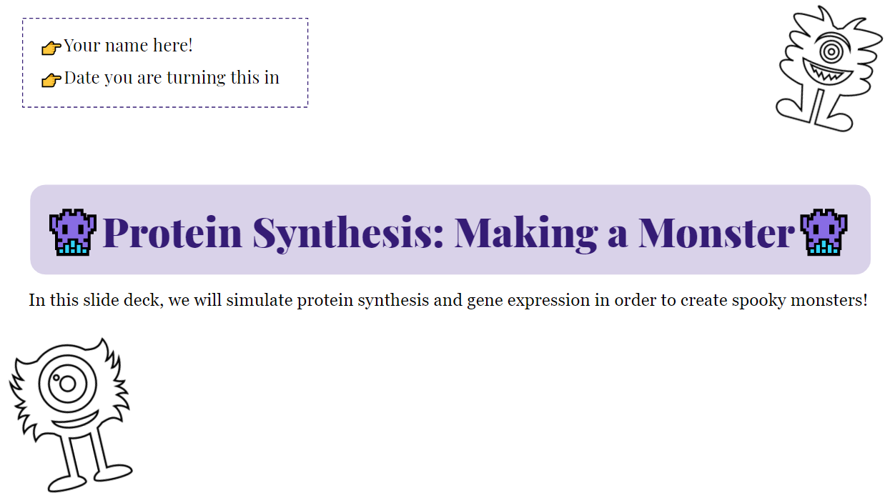

Below are sample unit plans utilizing different lesson types, from 5E to model eliciting activities. All of these lessons can be modified for use in a digital classroom.
A sample digital lesson developed for use with GSuite teaching to standard NGSS.HS.LS 3 about protein synthesis.
